Studio Remote monitoring and mixing
Motivation
I have a studio, Equipped with Studiolive Series III 24R, that is shared between several bands to do rehearsals. Every band that uses studio would like to have a recordings of their rehearsals for future analysis. The first and natural way was to offer SD card and do stereo recording on it. But this way have major drawbacks, that is related to post-recording steps: you must remember to take the card away from the mixer, then download files to your machine and upload it to the platform where band members could access it.
Bands share 2 sound guys (incl. me) between them. But we are not a part of their creative process, but help to build monitoring mixes for rehearsal purposes. At some point, attending every single rehearsal became very difficult, because the trip time to the studio is about 1h throughout the busy streets.
I was thinking about recording automation steps and time optimizations scenarios and came to the idea that live streaming of rehearsals with a remote monitoring and mixing could solve all the problems at once. While live streaming, mix get recorded and shared automatically, so no extra steps needed post-rehearsal. Remote monitoring and mixing solves trip time problems for both of sound guys. So, I've started to search for available solutions for it.
For remote control I've chosen
TeamViewer + UC on a remote host.
For streaming - OBS studio + ASIO plugin.
But there wasn't any suitable option for realtime monitoring and TALKBACK,so I've decided to prototype one for my needs. I looked into WebRTC engine that is built into modern browsers. This engine is used to hold your favorite conferences, like google meet, but this conferences uses some algorithms that renders it unusable for live monitoring. I’ve tuned some params to get a round-trip latency about 0.5s and quite decent audio quality.
The overall system diagram is shown on Pic 1.
Remote control setup
Using Team Viewer is really straightforward, and goes out of scope of this tutorial. You can find a lot of resources about how to use it. My advice is to setup an account to benefit quick (easy) access to your remote host. Another thing to note is choosing right options after you connect to your remote machine.
1. Disable your remote PC sounds.
Leaving this option enabled will confuse you, because you’ll hear your own mic.
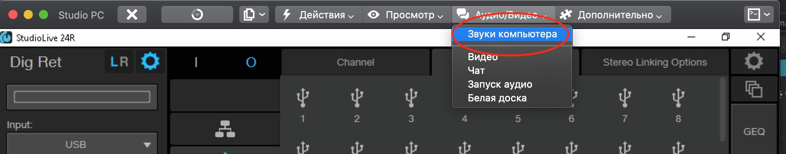
{kind=link}
2. Optimize your quality for speed.
This will give you more bandwidth for your live stream and a shorter response from controls
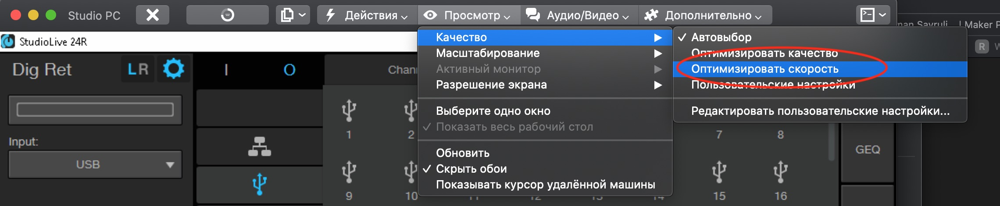
{kind=link}
Streaming setup
OBS Setup
Streaming is done using OBS studio + ASIO plugin. The setup is straightforward, just install OBS, and plugin afterwards.
1. Add an Asio source in OBS Studio Source Panel.
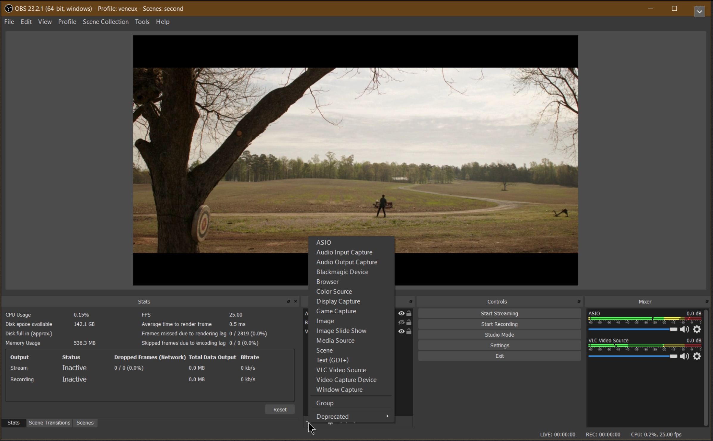
{kind=link}
2. Select input sources in input selection menu.
I used USB Channels 3&4 for matrix stereo pair mix
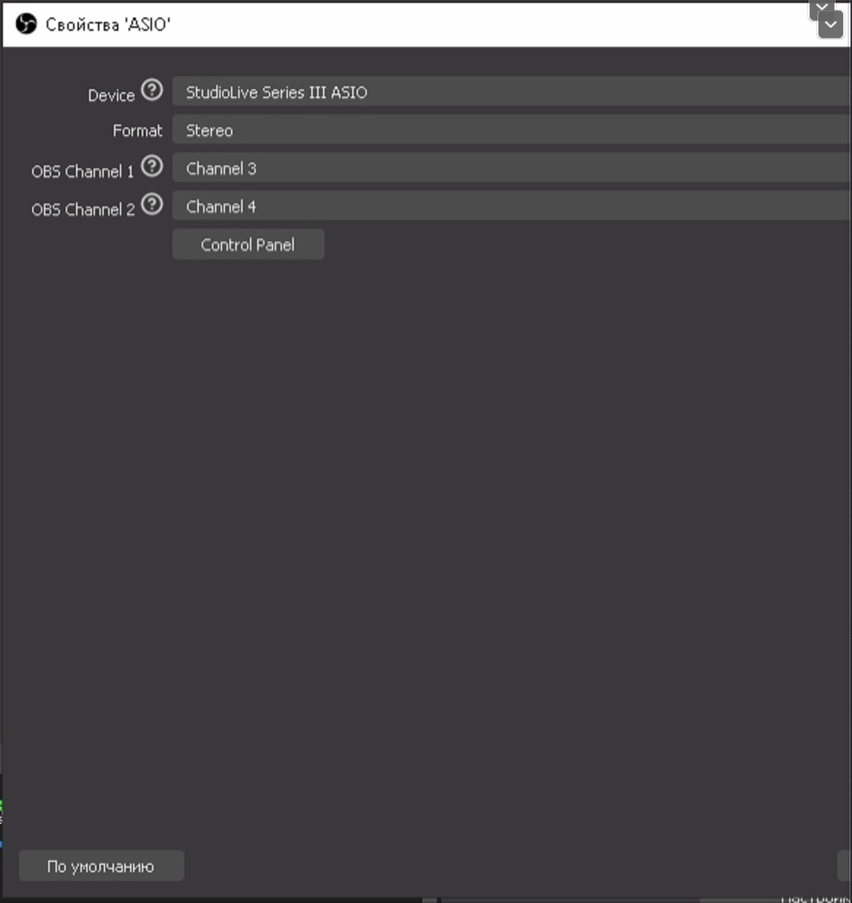
{kind=link}
Mixer Setup
In order to mitigate the feedback issues I don’t offer PA or monitor wedges by default.
Instead, I’ve built my own wired monitoring system and all musicians are advised to use it in the studio.
To make musicians feel more natural during rehearsals, I offered a subwoofer in a room with main PA off.
This forms 2.1 system (sub + L/R headphones) and really sounds great for every personal mix.
So, My AUX stereo pairs from 1-2 to 11-12 are for personal IEM mixes. 13-14 are reserved for rare use cases with wedge monitors, and 15-16 are stream mix (REC).
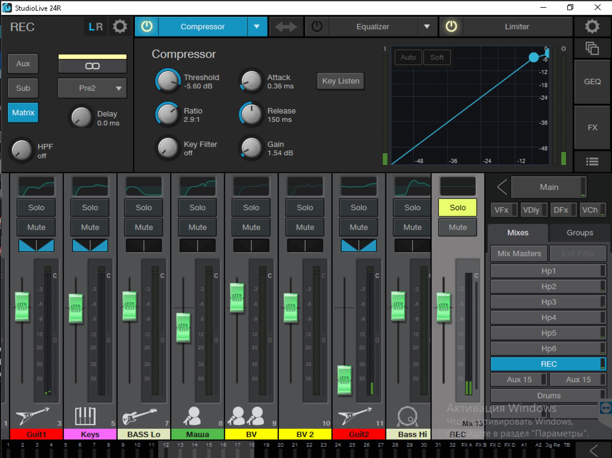
{kind=link}
1. Set this as a matrix mix, Pre2, with POST digital send option, routed to USB 3&4 or any other, that was selected in OBS Studio Asio Plugin as audio source
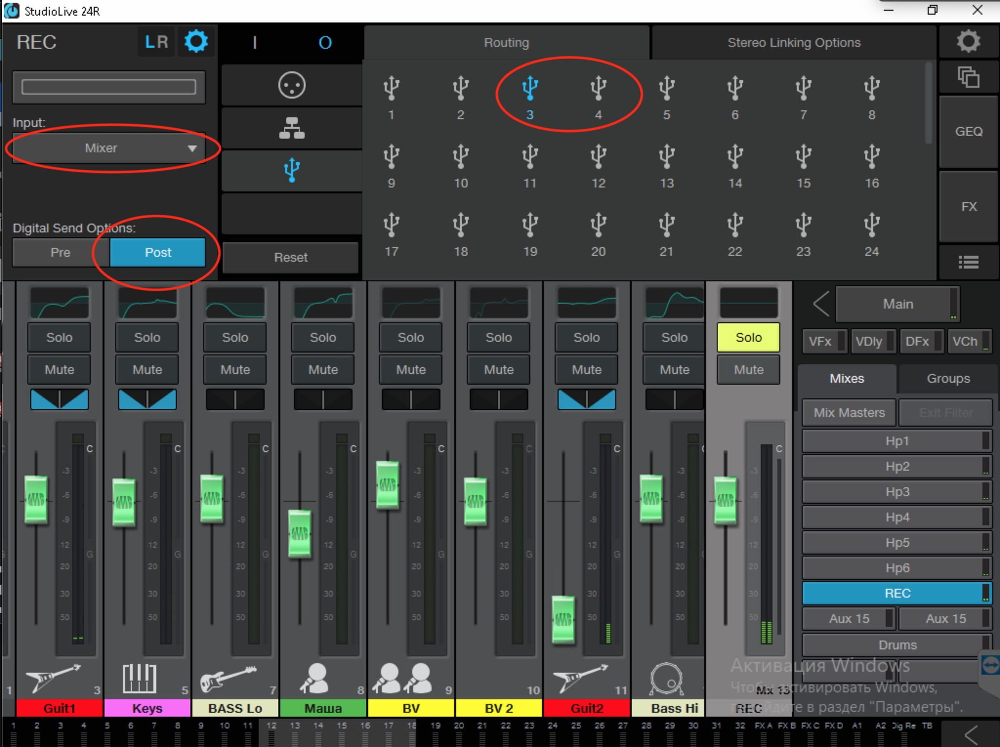
{kind=link}
From this point you are ready to do live steaming.
Remote Monitoring And TALKBACK setup
I intensively use SOLO bus for monitoring process. This gives me the way to listen to any source or a combination of sources I want at the moment.
Mixer & System Setup for Monitoring (Windows)
1. Patch SOLO bus to USB 1&2 pair with USB patch menu
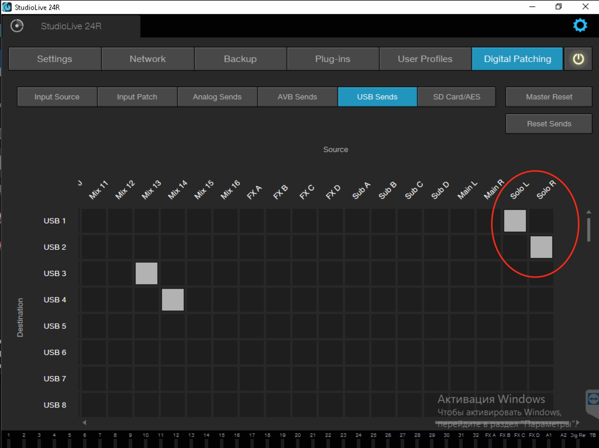
{kind=link}
2. Select Your mixer as default system sound and recording source in Windows menu.
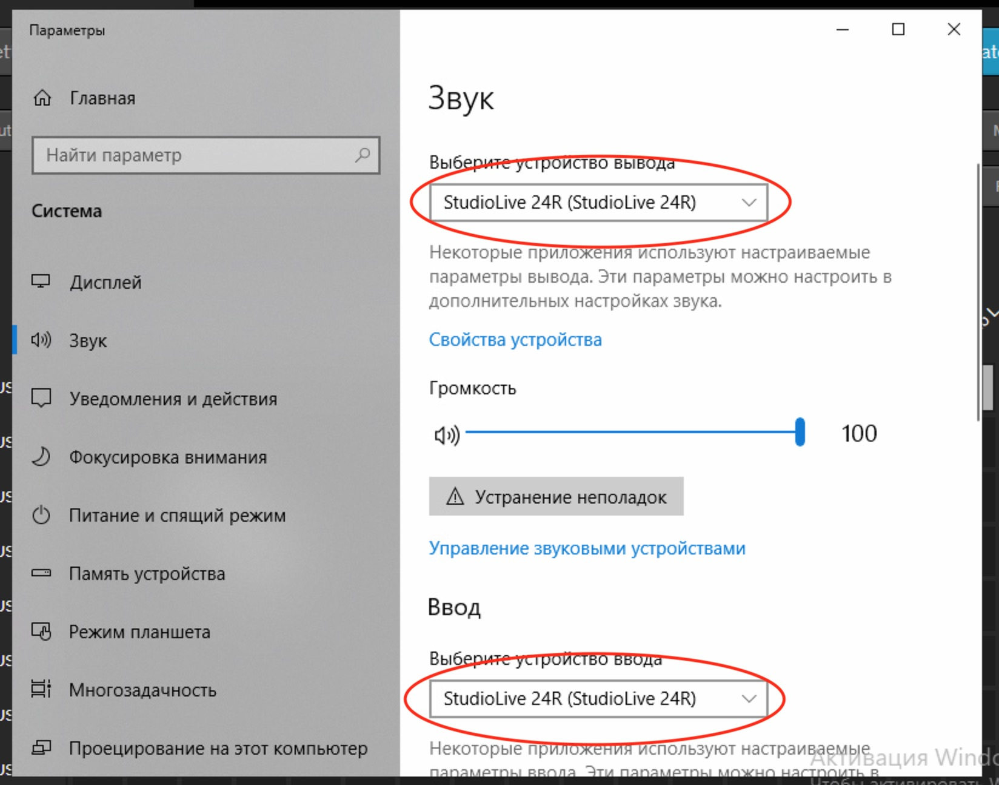
{kind=link}
Mixer Setup for TALKBACK
Unfortunately, you cannot use built-in TALKBACK system in 24R with USB TALKBACK source due to the lack of routing flexibility. So we have to use another option for it: DigiRet or Aux IN 1/2. I use DigiRet.
1. Patch your USB channels 37/38 to Digital Return (DigiRet channel)
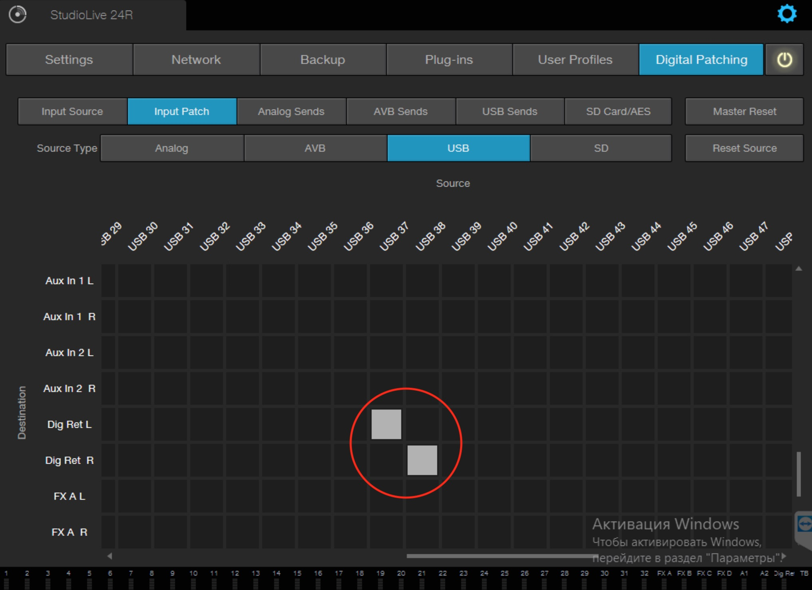
{kind=link}
2. Verify DigiRet is selected as USB source.
Mute the channel by default.
You will use MUTE button on main mix to toggle TALKBACK to all your AUXes of choice.
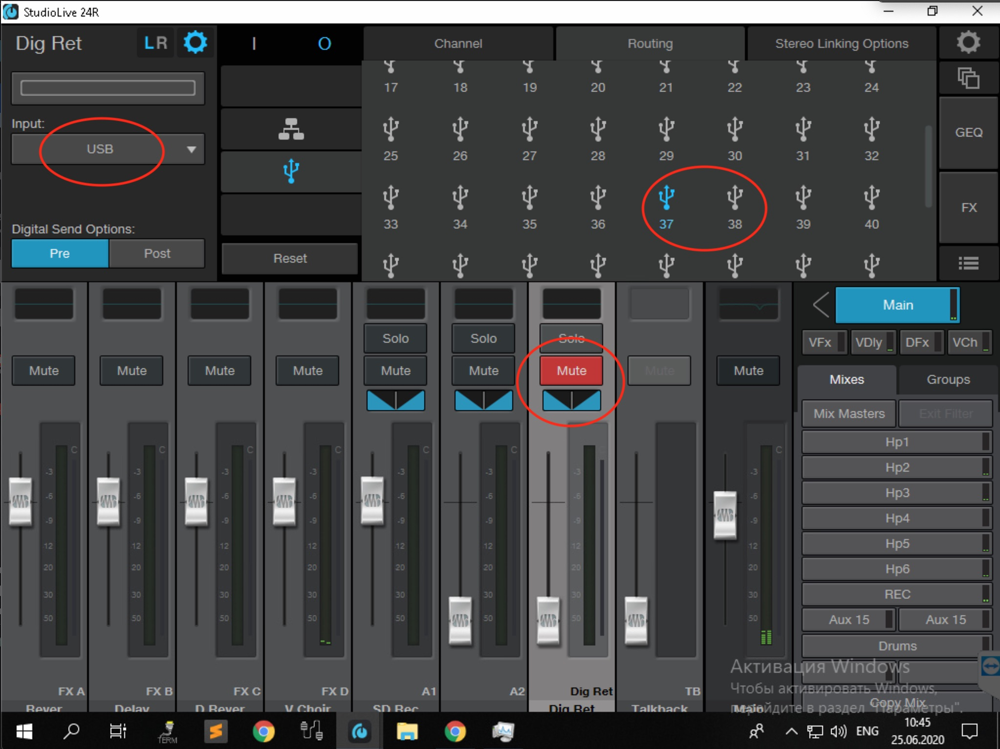
{kind=link}
3. Select «Main Mutes Auxes» as an option for Link Aux Mutes.
This will give you a single button click on a main mix Digi Ret Mute to toggle TALKBACK to all of your HP mixes
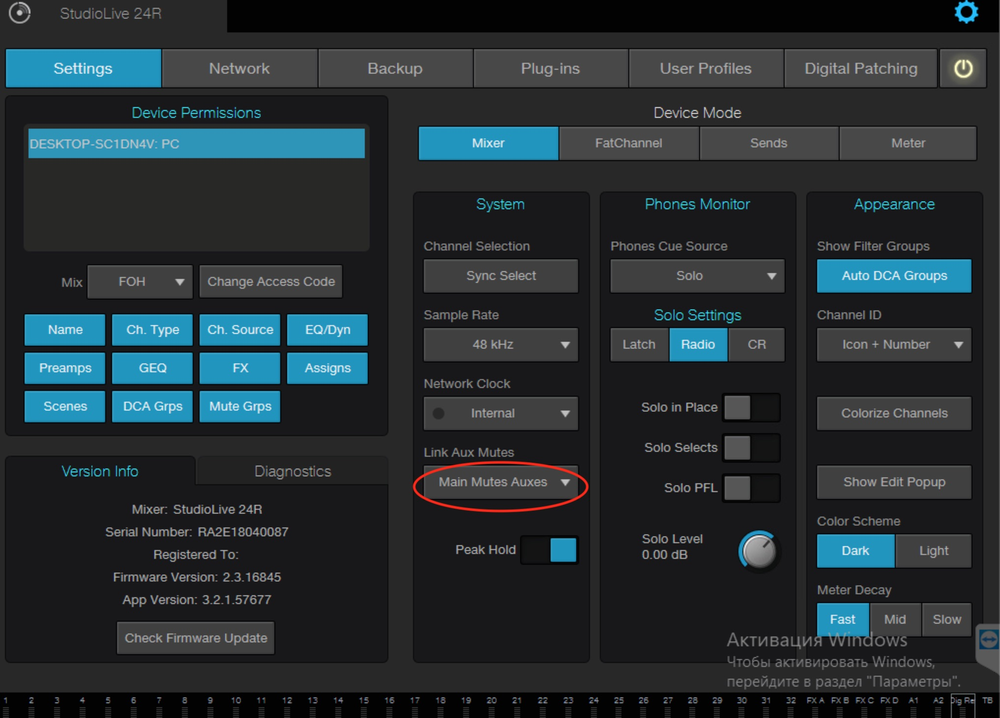
{kind=link}
4. Bring DigiRet to all your desired mixes you want to TALKBACK to
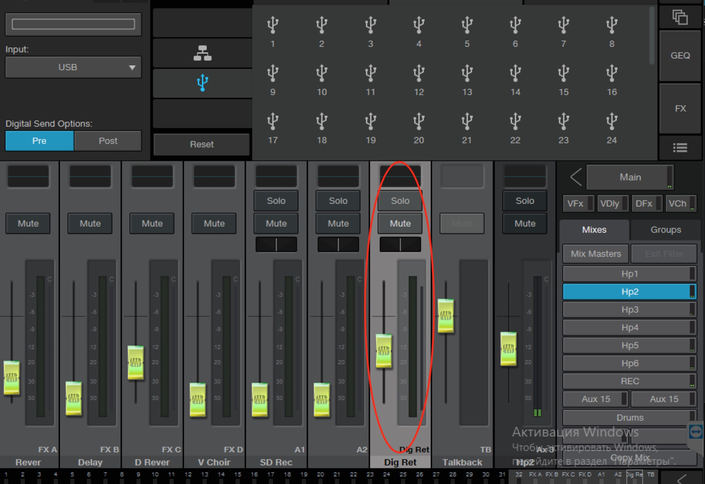
{kind=link}
Workflow steps. Bringing all together
To pass a SOLO stream from studio to my monitoring site and a TALKBACK to studio, use my custom built web page
1. Open this page on remote PC in the studio
2. Setup new «broadcast room» for your monitoring with «New Broadcast» button, optionally giving it a name.
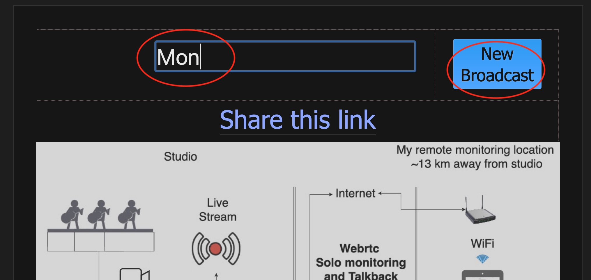
{kind=link}
3. It will ask you for permissions to access your mic for the first time.
Ensure your mic is either default (if you have selected Studiolive in your windows audio preferences), or Presonus Studiolive explicitly.
You can persist your choice to allow permissions.
4. You should see a single player on a page with a MUTED sound output.
That’s fine, don’t touch any controls on it (AT ALL).
5. In a room page, copy its link
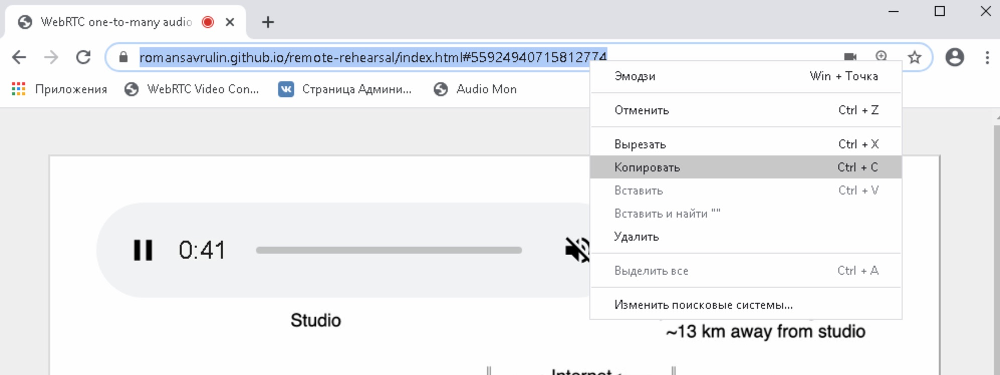
{kind=link}
6. Open this link on your monitoring site machine.
Remember to see that unique hashes of the pages in URL on both pages match!
If everything Is OK, you’ll see your broadcast room on your monitoring site browser.
Just click «Join Room» button on side of room’s name
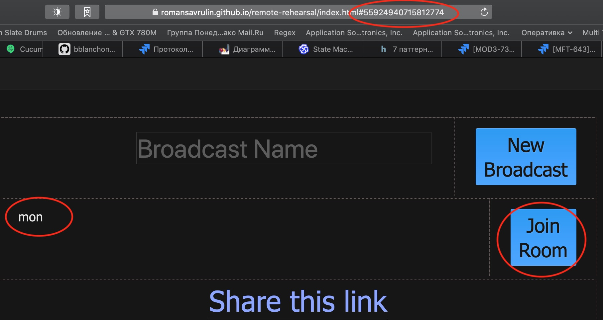
{kind=link}
7. The page should ask you for permissions to use your microphone for TALKBACK.
You MUST approve it, otherwise everything will brake.
8. After connection setup, you should see 2 players running on your monitoring site’s page.
Left hand side player is for your SOLO bus from remote machine.
DO NOT TOUCH RIGHT HAND SIDE PLAYER.
Do not touch transport buttons on ANY player you see.
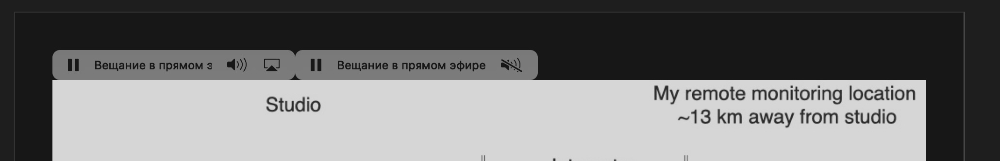
{kind=link}
9. That’s all, now you can hear your SOLO bus from remote host and use your remote mic to TALKBACK to the studio.
Using mobile device
The workflow on a mobile device should be the same as on PC. I've tested it with iOS13 + Safari + TeamViewer for iOS. But solution looks a bit hackish to me and sometimes unstable.
1. Open Team Viewer and connect to your remote PC.
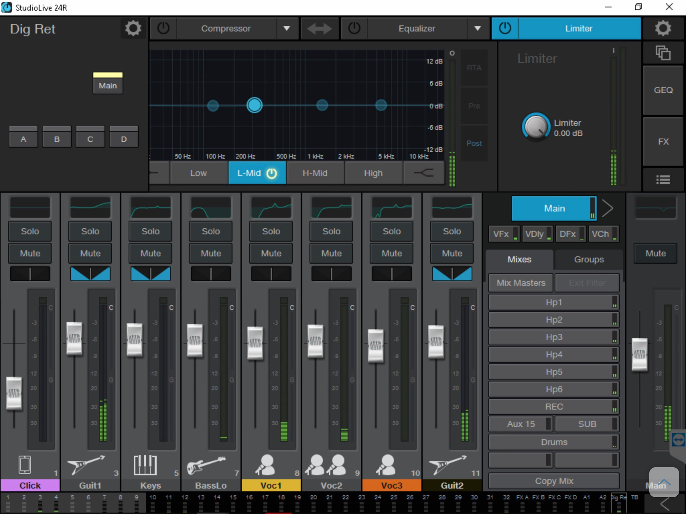
{kind=link}
2. Setup remote side of conference with the steps above
3. Open conference link in safari. Team viewer will tell you that it will disconnect soon.
4. Connect to the conference in Safari. You must start to hear your remote SOLO source.
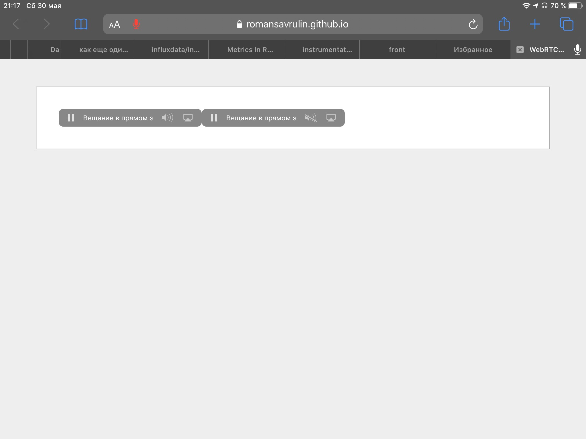
{kind=link}
5. Return to TeamViewer. Now you could test your TALKBACK function.
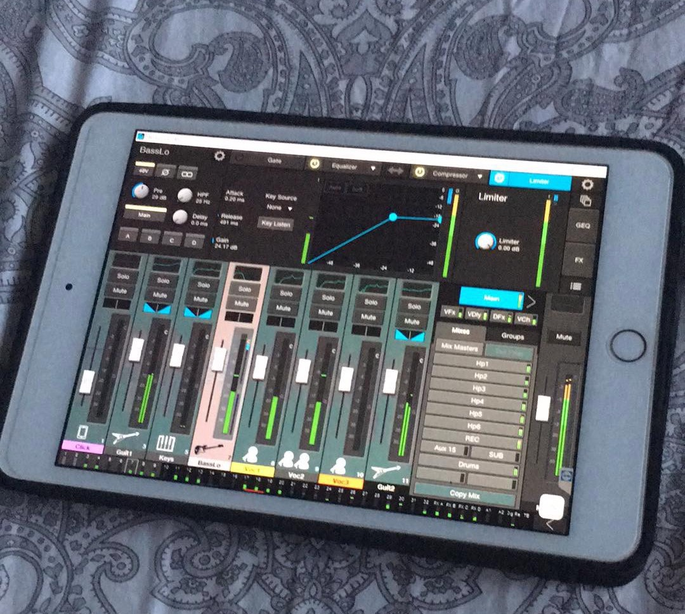
{kind=link}